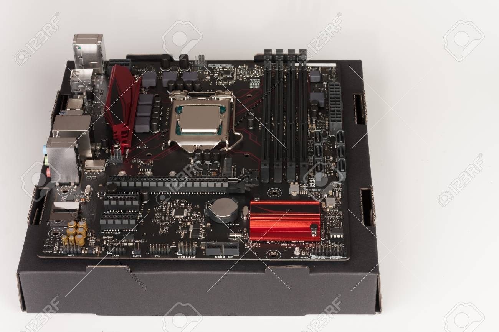
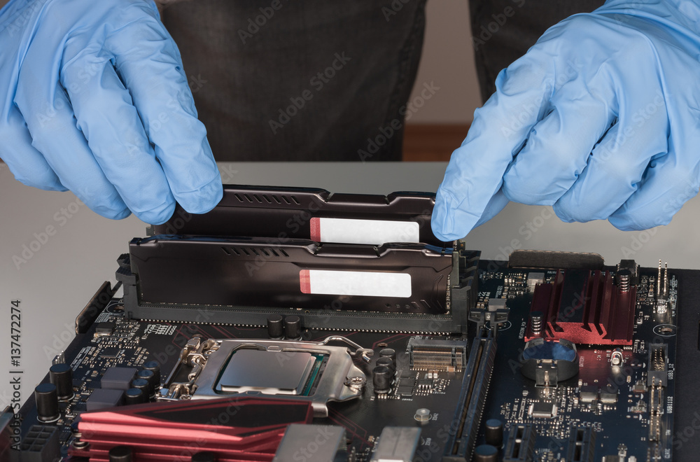
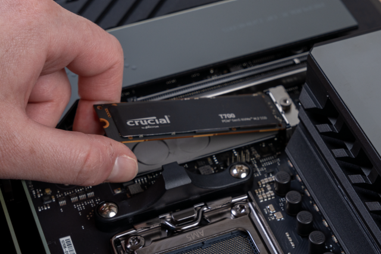

Vítejte na stránce jak postavit herní a pracovní počítač
Na této stránce se dozvíte jak postavit počítač, jaké vybrat komponenty a jak naistalovat windows
Obsah stránky
- Výběr komponent
- Příprava prostředí pro stavbu
- Příprava základní desky
- Instalace CPU
- Instalace paměti RAM
- Instalace úložiště SSD na základní desku
- Instalace chladiče na CPU
- Kontrola provozu pc, zda vše funguje
- Aplikování základní desky do pc case
- Instalace PSU (zdroje) do case
- Zapojení všech kablů do základní desky a k zbytku komponent
- Kontrola a správa kabelů, zda je vše v pořádku
- Zapojení DVD kabelu do GPU a monitoru
- Instalace windows
1. Výběr komponent
- To nejdůležitější co potřebujete pří stavbě počítače udělat jako první je vybrat komponenty.
Jako první začneme se základní deskou nebo-li Motherboard. Musí ji vybrat tak aby byla kompatibilní s vašim procesor např. patice lga 1700 desky k patici procesoru lga 1700.
- Dále musíte vybrat paměti RAM tak aby byly kompatibilní k vaší základní desce. Tudíž k desce, která podporuje DDR4 musíte dát ramky, které budou podporovat DDR4.
- Pak tady máte úložiště, v dnešní době bude pravděpodobně hledat SSD a ne HDD jak před třeba 20 lety. U SSD to není tak moc složité stačí vám jenom zkontrolovat jestli máte SATA nebo Nvm.
- U chladiče procesoru si musíte dávat pozor na úplně to stejné jako u procesoru, takže chladič s paticí např. AM4 na základní desku s paticí AM4 a na procesor a paticí AM4. Samozřejmě chladič pravděpodobně dostanete k procesoru ale bude hlučnější a s vyšími teplotami procesoru. Jestli chtete se tomuto vyhnout tak obětujte těch 700 stovek za chladič.
- Dále tady máte zdroj pro váš počítač, který musí být dostatečně výkonný, aby mohl napájet všechny vaše komponenty.
- Pak tu máte grafickou kartu GPU ta potřebná pokud již nemáte integrovanou grafiku ve vašem procesoru a samozřejmě dedikovanou kartu už potřebujete pro náročnější hry nebo pokročilejší aplikace.
- Pak si musíte vybrat bednu do které to všechno dáte a která bude splňovat všechny parametr všech komponent.
- Ventilátory nemusíte instalovat pokud už nejsou předem instalované v bedně nebo pokud by jste chtěli si jich tám přidat.
- A pak si koupíte windows 10 pro (protože windows 10 pro je levnější o něco než w11) na této stránce za ne ani 100 kč premiumCDkey.
Zde klikněte na odkaz jak sestavit pracovní počítač nebo jak postavit počítač (videomanuál)
2. Příprava prostředí pro stavbu
- Najděte si čistý a dobře osvětlený pracovní prostor a ujistěte se aby vás nikdo během stavby nerušil. Zajistěte, že máte potřebné nástroje, jako třeba šroubovák a také neskládejte počítač na koberci a v ponožkách kvůli statické elektřině, která by mohla poškodit komponenty . Také si vezměte nějakou podložku na stůl aby jste si ho nepoškrábali např. od zákládni desky a tu podložku si dejte taky nevodivou.
3. Příprava základní desky
- Nejprve si rozbalte základní desku z krabice a základní desku si položte na krabici vaší základní desky a může jít na další krok.

4. Instalace CPU
- Takže prvně vytáhnete procesor z boxu, poté ho vyndejte z plastové ochrany a chytněteho ze stran tak abyste nešahaly na spodní piny. Pak musíte na základní desce pohnout s páčkou s kterou otevřete ochranu patice. Vložte procesor do patice tak aby šipka, která je na procesory směřovala proti šípce, která je na základní desce. Poté zackvakněte páčku zpátky a hotovo.

5. Instalace paměti RAM
- Když vytáhnete paměti RAM z krabice tak je zejména musíte zapojit do druhého a čtvrtého slotu (Proč? No kvůli dual channelu, který podporuje procesor. Ano můžete mít více ale ideální jsou ty dvě) dám od procesoru pro další krok instalace chladiče. U patice pro RAM otevřte patice, poté chytněte RAMky tak abyste se zase nedotýkaly pinů. Ujistěte se že je dáváte správně a pak mírnou silou na ně zatlačte dokud neuslyšíte cvaknutí tím máte hotovo.

Instalace úložiště SSD na základní desku
- Instalace SSD disku je velmi jednoduchá, vezmete ho a dáte ho na místo kam patří. Nejprve odřoubujete šrouby nebo chladíci podložku pokud máte takovou desku a pak ho zasunete do konektoru/patice a jednoduše našroubujete ty šrouby zpátky.

Instalace chladiče na CPU